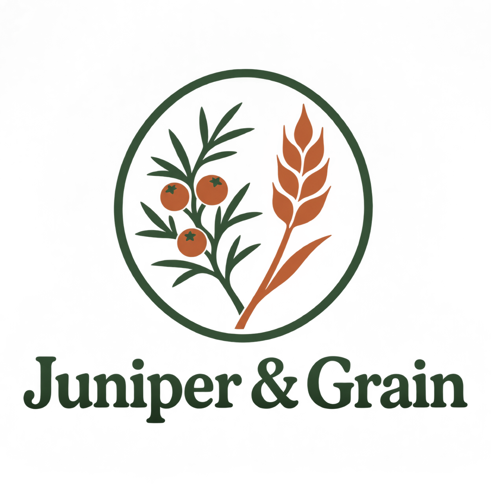

THE NEIGHBORHOOD'S LITTLE LOVE LETTER
Meet me
at Juniper.
For slow mornings, long conversations, and one more sip before the day begins.
FIND YOUR NEW USUAL ↗made for the little moments ♡

coffee & companysince the first sip
DAILY
RITUAL ✦ stay a while ↗